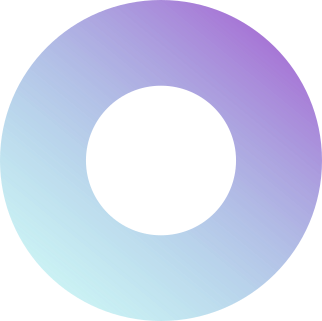
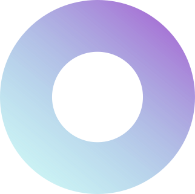

Экосистема маркетинговых исследований и продуктов для бизнеса
Вращаем мир вокруг сервиса для гармонии бизнеса и людей
Узнать подробнее
Наша экспертиза


Свяжитесь с нами
Мы открыты для вопросов, деловых запросови консультаций. Свяжитесь с нами сегодня, и сотрудник нашей команды поддержки свяжется с вами в ближайшее время
Получить консультацию

Инструменты


Ресурсы
- 5-20 супервайзеров в каждом регионе РФ
- 450+ интервьюеров
- 100% аудио запись, валидация, геочекинг, опросы на планшетах
- 30 опытных модераторов
- Составление гайдов ФГ и интервью
- Оnline комнаты для проведения фокус-групповыхдискуссий и глубинных интервью
- Субъективный индекс
- Путь Тайного покупателя Remote Accompaniment
- Индекс персонализированного сервиса
- Методика вовлеченности персонала
- Собственный штат аналитиков
- Отчеты в xlsx, spss, ppt Power BI, Tablue, QlikView
- Big Data


- Покрытие всех регионов РФ, база 500 тыс.+ участников исследований
- 250+ проектов Тайный Покупатель / месяц
- Отбор участников по профилю и опыту
- Быстрое заполнение анкет через приложение
- Валидация аудиозаписей и фото
- Оценка качества каждого ТП (грейдинг)
- Антифальсификат программы
- Собственный Контакт-центр на территории РФ
- Горячая линия, опросы, телемаркетинг
- 100% аудио запись, валидация диалогов
- Программируемые анкеты CATI
- Операторы для глубинных интервью по телефону
- 500 000+ зарегистрированных пользователей в России
- Глубокая сегментация профиля
- Населенные пункты от 5 тыс. жителей
- Целевой дорекрутинг современными инструментами таргетинга


 

Не нашли нужные ресурсы?
Задайте нам вопрос и опишите вашу потребность
Задачи бизнеса которые мы решаем


Кейсы
Период мониторинга
Отрасль бизнеса
Задачи проекта
Профиль клиента
Цель проекта
Механика
Результат
Проект:
Ценность:
Цель проекта
Отрасль бизнеса
Задачи проекта
Профиль клиента
Механика
Результат
Проблематика:
Ценность:
Решение:
География
Отрасль
Метод
База
Цель исследования
Целевая аудитория
Отрасль бизнеса:
Цель проекта:
Задачи проекта:
Профиль клиента:
Механика:
Результат:
Отрасль бизнеса:
Цель проекта:
Задачи проекта:
Профиль клиента:
Механика:
Результат:
Отрасль бизнеса:
Цель проекта:
Задачи проекта:
Профиль клиента:
Механика:
Результат:
Отзывы


КЛИЕНТЫ
Расскажите о своей задаче
Оставьте заявку на просчет коммерческого предложения или помощь в разработке концепции исследования.
Заказать бесплатный пилотный проект

о компании


Компания Сервизория
Является членом международной ассоциации провайдеров услуги Тайный Покупатель MSPA, эксперты
компании являются членами международной ассоциации компаний – участников рынка маркетинговых
исследований ESOMAR, а также мы проходим ежегодную сертификацию менеджмента качества ISO
20292:2019 и 9001:2015.
Наша большая идея – открыть нашим клиентам новые возможности для роста и развития бизнеса,
опираясь на безупречные данные о потребителях и рынках
Наши ключевые партнеры
Это российские телекоммуникационные компании, банки, страховые, продовольственные и непродовольственные розничные сети, интернет-агрегаторы и экосистемы, сети медицинских лабораторий и клиник, производители товаров ежедневного спроса и промышленный сектор
НАС МНОГО – В КАЖДОМ УГОЛКЕ РФ
Сервизория – это экосистема маркетинговых исследований и продуктов. С 2016 года наша компания занимается:
- маркетинговыми исследованиями
- исследованиями клиентского опыта
- исследованием пути клиента в цифровых сервисах
- аудитом бизнес-процессов в розничных сетях
- аудит рекламно-информационных материалов
- организацией рекрутинга респондентов
- анализом рынков
- мониторингом цен
- качественными исследованиями
- количественными исследованиями, всех видов, обеспечивая репрезентативное покрытие каждого региона РФ, включая населенные пункты от 10 тыс. человек.
Наша миссия
ВРАЩАЕМ МИР ВОКРУГ СЕРВИСА
для гармонии бизнеса и людей
наши ценности
Место. Люди. Время. Страсть
Место дает нам Идеи, Люди дают нам Радость, Время дает нам Смелость, Страсть дает нам Силу


Свяжитесь с нами
Мы открыты для вопросов, деловых запросови консультаций. Свяжитесь с нами сегодня, и сотрудник нашей команды поддержки свяжется с вами в ближайшее время
Получить консультацию
Контакты
Если у вас есть вопросы или предложения, вы можете связаться с нами любым удобным для вас способом.